DDSA Data Science in Practice
Communicating Insights with Effective Data Visualization
Gregers Kjerulf
Marc Schønwandt
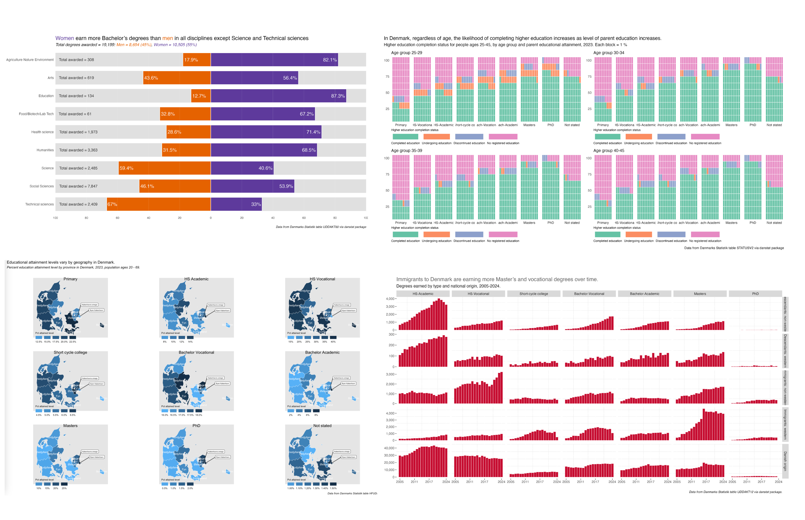
DDSA Data Science in Practice
Communicating Insights with Effective Data Visualization
The plan for this afternoon

Why Visualize Data?
Information
- Examples: sports league tables, political polling charts
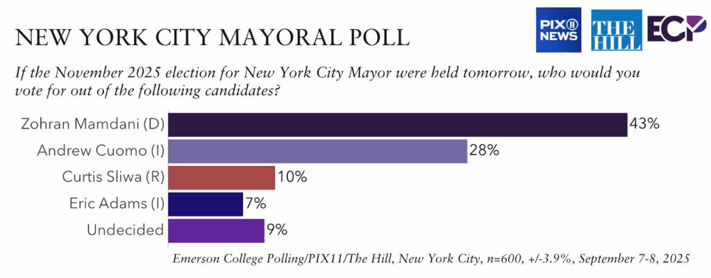
image sources: https://www.premierleague.com/en/tables and https://emersoncollegepolling.com/nyc-2025-mayor/
Why Visualize Data?
- Insights
- Examples: company dashboard in real time, annual / quarterly reports
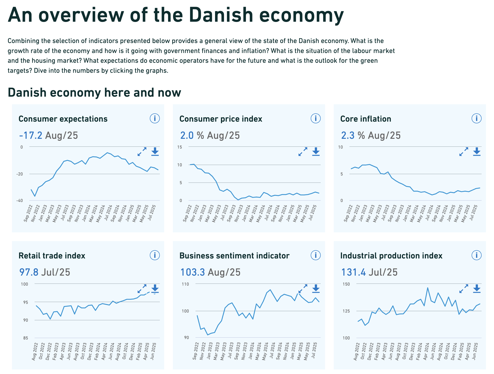
image source: https://www.dst.dk/en/Statistik/temaer/overblik-dansk-oekonomi retrieved 11/09/2025
Why Visualize Data?
- Persuasion
- Examples: research papers, data-driven blogs
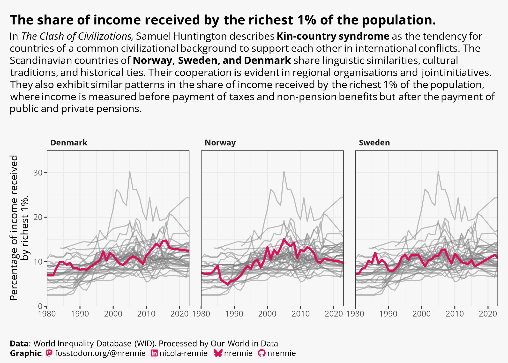
image source: https://github.com/nrennie/30DayChartChallenge/tree/main/2025#day-14-kinship-made-with-r
Data Viz Theory Time!
Let’s talk about the Grammar of graphics
The whole system and structure of a language or of languages in general, usually taken as consisting of syntax and morphology (including inflections) and sometimes also phonology and semantics.
Source: Oxford Languages via google
How we structure what we want to communicate.
The Grammar of graphics
Ok, so how does that apply to data visualization?
It is a framework to describe the elements of a data graphic and guides our design choices.
How we structure the data we want to communicate visually.
Original concept by Leland Wilkinson, in his book, The Grammar of Graphics.
The Grammar of graphics
Great, so what are the elements?
- Data
- Aesthetics
- Scale
- Geometric Objects
- Statistics
- Facets
- Coordinate system
The Grammar of graphics
Data
What are we going to display?
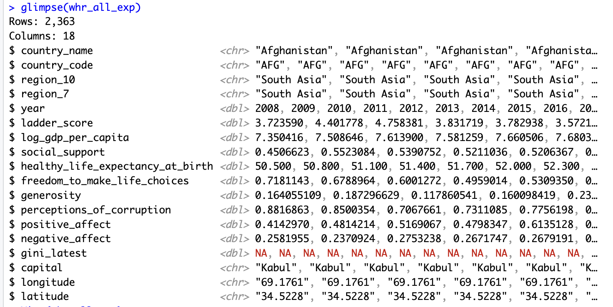
The Grammar of graphics
Aesthetics
How we display the data using
visual elements such as:
- color
- size
- axes
- title
- legend
- annotation text
The Grammar of graphics
Scale
How do we display the data in relation to an objective point and/or in relation to the data points themselves?
The Grammar of graphics
Scale
Why are the limits of your scales important?
The Grammar of graphics
Geometric objects
What type & shapes of marks do we use?
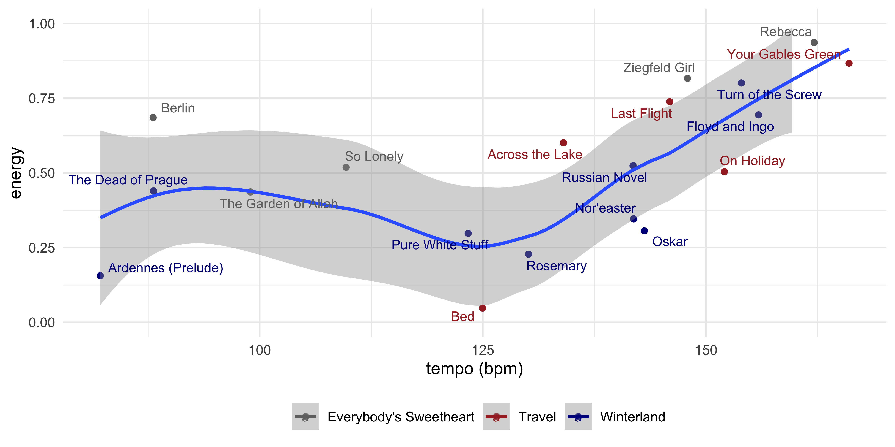
Source: https://www.gregdubrow.io/2021/02/27/sad-songs-pretty-charts-a-gosta-berling-music-data-visualization/
The Grammar of graphics
Statistics
How do we measure and analyze the data?
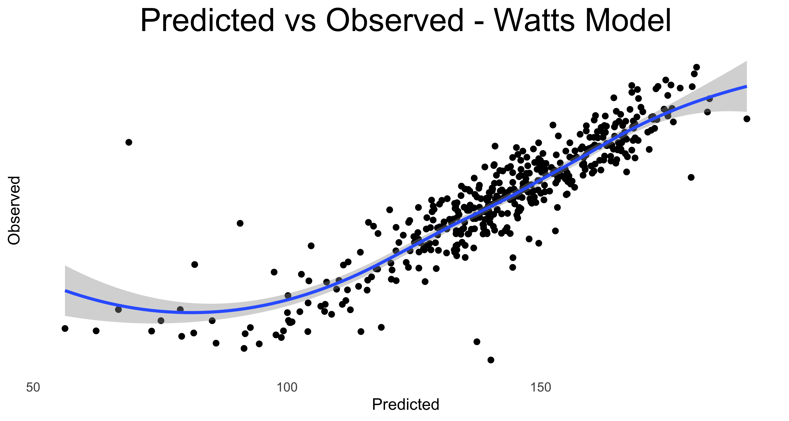 
Source: https://www.gregdubrow.io/posts/my-year-of-riding-danishly/
The Grammar of graphics
Facets
Small multiples for complex visualization

Source: https://www.gregdubrow.io/posts/30-day-chart-challenge-2025/#prompt28
The Grammar of graphics
Coordinate systems
How do we position the data in the chart?
Cartesian: Each point at a spot identified by the axes
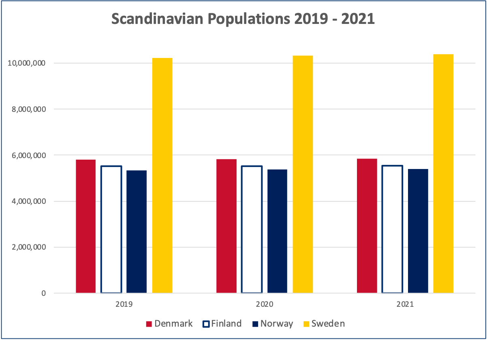
The Grammar of graphics
Coordinate systems
How do we position the data in the chart?
Mapping:
Each point at a spot identified by the axes within defined boundaries.
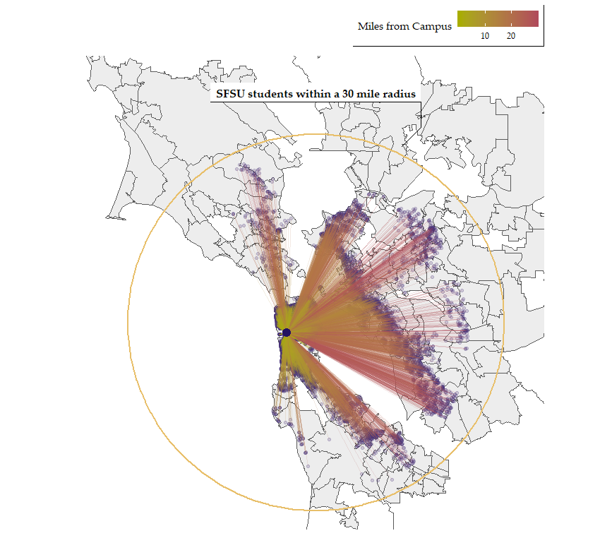
Tools of the Trade
It used to be ink and paper…
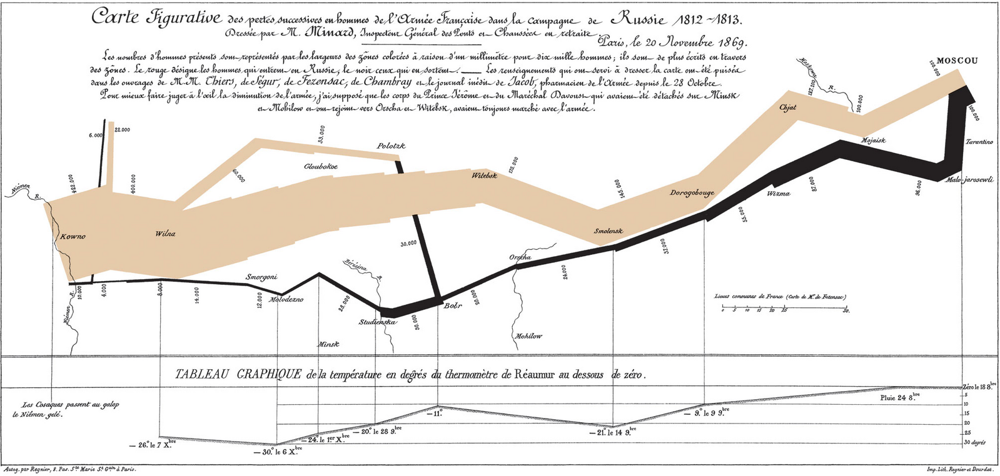
Charles Joseph Minard - Map of successive losses of men of the French Army in the Russian campaign 1812-1813
Tools of the Trade
It used to be ink and paper…
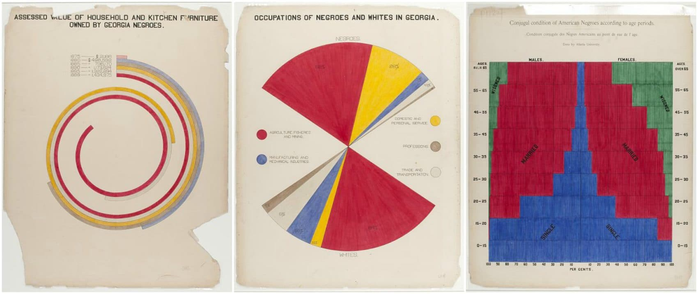
WEB DuBois infographics from Paris Expo

Florence Nightingale rose plot
For inspiration! Data Visualization Resources
Data Visualization Success Stories
with Marc Schønwandt
Let’s Get Creating!
Create a visualization to communicate noteworthy insights from the data.
What thoughts or questions do you have?
Thank You!
Keep in touch:
Marc
Gregers